Numim transformare izobară transformarea pe parcursul
căreia numărul de moli şi presiunea sistemului termodinamic rămân nemodificate.
Numim transformare izobară transformarea pe parcursul
căreia numărul de moli şi presiunea sistemului termodinamic rămân nemodificate.
Elemente de termodinamică. |
Transformări simple ale gazului ideal |
E-4. |
Transformarea izobară |
Numim transformare izobară transformarea pe parcursul
căreia numărul de moli şi presiunea sistemului termodinamic rămân nemodificate.
 Provocarea 5-1
Provocarea 5-1
Care este relaţia dintre parametrii variabili ai unui gaz ideal care participă la o transformare izobară?
În oricare stare de echilibru a gazului ideal, între parametrii care caracterizează starea acestuia există relaţia dată de ecuaţia de stare:

| (1) |
Dacă exprimi volumul gazului, obţii:
Legea transformării izobare: Volumul gazului ideal este
direct proporţională cu temperatura absolută a gazului:
| (2) |
sau, echivalent:
| 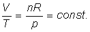 | (3) |
Provocarea 5-2
Un gaz ideal se află într−o stare iniţială, caracterizată de parametrii (p, V1, n, T1). Gazul participă la o transformare izobară până într−o stare finală, caracterizată de parametrii (p, V2, n, T2), ca în figura 5−1.
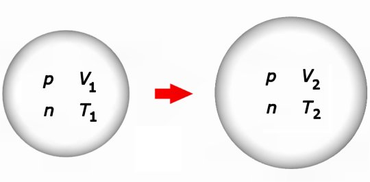
Figura 5-1. O transformare izobară a unui gaz ideal.
Care este relaţia dintre parametrii care caracterizează stările iniţială şi finală ale gazului ideal?
Dacă utilizezi forma (3) a legii transformării izobare, obţii imediat:
| 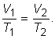 | (4) |
Relaţia obţinută îţi permite să calculezi oricare dintre parametrii variabili ai gazului ideal, dacă îi cunoşti pe ceilalţi trei.
Provocarea 5-3
Cum ai reprezenta grafic stările prin care trece un gaz ideal pe parcursul unei transformări izobare?
Într−o transformare izobară, parametrii variabili sunt volumul şi temperatura gazului. Într−un sistem de axe, în care una dintre axe este volumul, iar cealaltă este temperatura, fiecărei stări a gazului îi corespunde un punct de coordonate (V, T), ca în figura 5−2.
 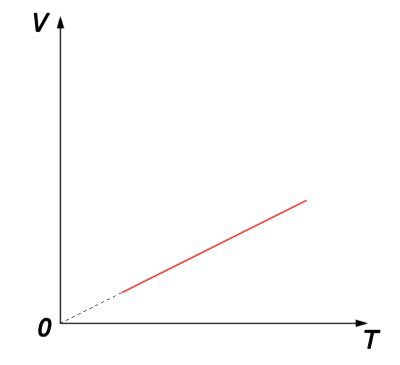
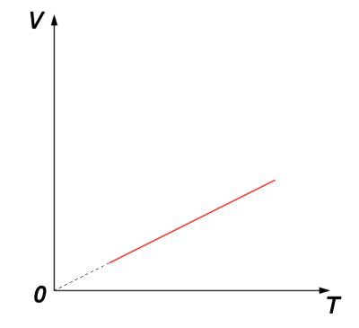
Figura 5-2. Reprezentarea grafică a unei transformări izobare, în coordonate V−T.
În coordonate V−T, reprezentarea grafică a unei transformări izobare a gazului ideal este un segment aparţinând unei drepte care trece prin originea sistemului de coordonate. Panta dreptei (înclinarea acesteia faţă de axa temperaturii), definită ca 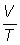, este chiar constanta din legea transformării izobare: 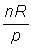.
Legea transformării izobare a fost descoperită experimental de către francezul Jaques Charles, în 1787. Acesta a constatat că o serie de gaze (aer, oxigen, azot, hidrogen, dioxid de carbon) se dilată în aceleasi proporţii, pe un interval de 80°C. Rezultatele au fost publicate pentru prima dată în 1802 de către francezul Joseph Louis Gay−Lussac, care a descoperit şi dependenţa liniară dintre volum şi temperatură.
În cazul hidrogenului, la presiuni în jurul celei atmosferice normale şi temperaturi în intervalul 0°C...100°C, abaterile faţă de relaţia (3) sunt mai mici de 0,5% (tabelul 5−1).
Tabelul 5-1. Valori experimentale pentru un proces izobar al hidrogenului, la presiunea 100 kPa.
| T (K) |
V (cm3) |
V/T (cm3/K) |
| 273 | 114 | 0,418 |
| 298 | 124 | 0,416 |
| 323 | 134 | 0,415 |
| 348 | 145 | 0,417 |
| 373 | 155 | 0,416 |
În aceste condiţii de temperatură şi presiune, hidrogenul şi, în general, gazele reale se comportă asemănător modelului gazului ideal.
Provocarea 5-4
Cât este variaţia energiei interne a gazului ideal care participă la transformarea izobară prezentată în figura 5−1?
Energia internă este o mărime de stare, astfel că variaţia energiei interne depinde doar de stările iniţială şi finală, nu şi de transformarea care are loc între aceste stări. Astfel:
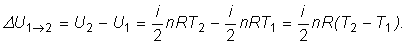
Provocarea 5-5
Cât sunt lucrul mecanic şi cantitatea de căldură transferate între gazul ideal şi mediul său pe parcursul unei transformări izobare?
Presiunea fiind constantă pe parcursul unei transformări izobare, poţi calcula direct lucrul mecanic:
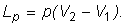
Folosind ecuaţia de stare a gazului ideal, poţi scrie:
| 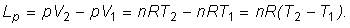 | (5) |
Poţi acum calcula cantitatea de căldură schimbată între sistem şi mediul său aplicând principiul I al termodinamicii. Obţii astfel:
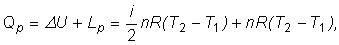
expresie pe care o poţi pune sub forma:

Cantitatea  este căldura molară la presiune constantă a gazului ideal:
este căldura molară la presiune constantă a gazului ideal:

Provocarea 5-6
Care este relatia dintre căldura molară la presiune constantă şi cea la volum constant, pentru gazul ideal?
Diferenţa dintre cele două călduri molare ale gazului ideal este:

Aşadar,
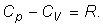
Acest rezultat important este numit relaţia Robert Mayer, în onoarea germanului Robert von Mayer. Acesta a fost primul care, în 1842, a formulat o lege generală de conservare a energiei şi a obţinut un prim rezultat de echivalare între lucrul mecanic şi cantitatea de căldură.
Într−un proces izobar, cantitatea de căldură necesară pentru a obţine aceeaşi creştere de temperatură este mai mare decât într−un proces izocor (Cp>CV), deoarece, într−un proces de destindere izobară gazul efectuează lucru mecanic. Astfel, doar o parte din energia primită sub formă de căldură conduce la creşterea energiei interne a gazului, cealaltă parte fiind transferată mediului sub formă de lucru mecanic.